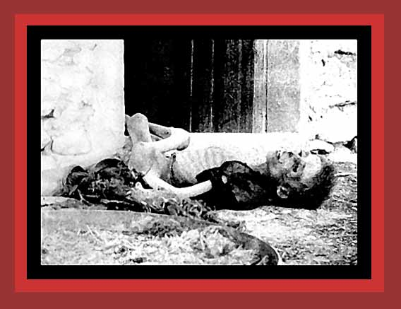

Here is a young Armenian boy the Turkish dictatorship murdered by starvation. For documentation, see
Death By Government
and
Statistics of Democide
. Source:
" Armenian Deportees: 1915-1916"
, photographed by Armin T. Wegner.
Next
photo of those murdered by government
Return
to Photographs of Democide, Room 1
Home